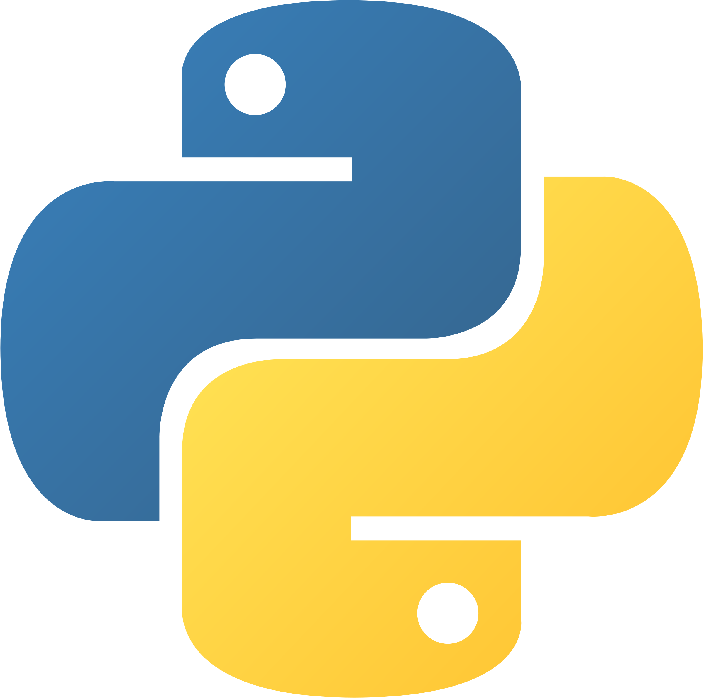
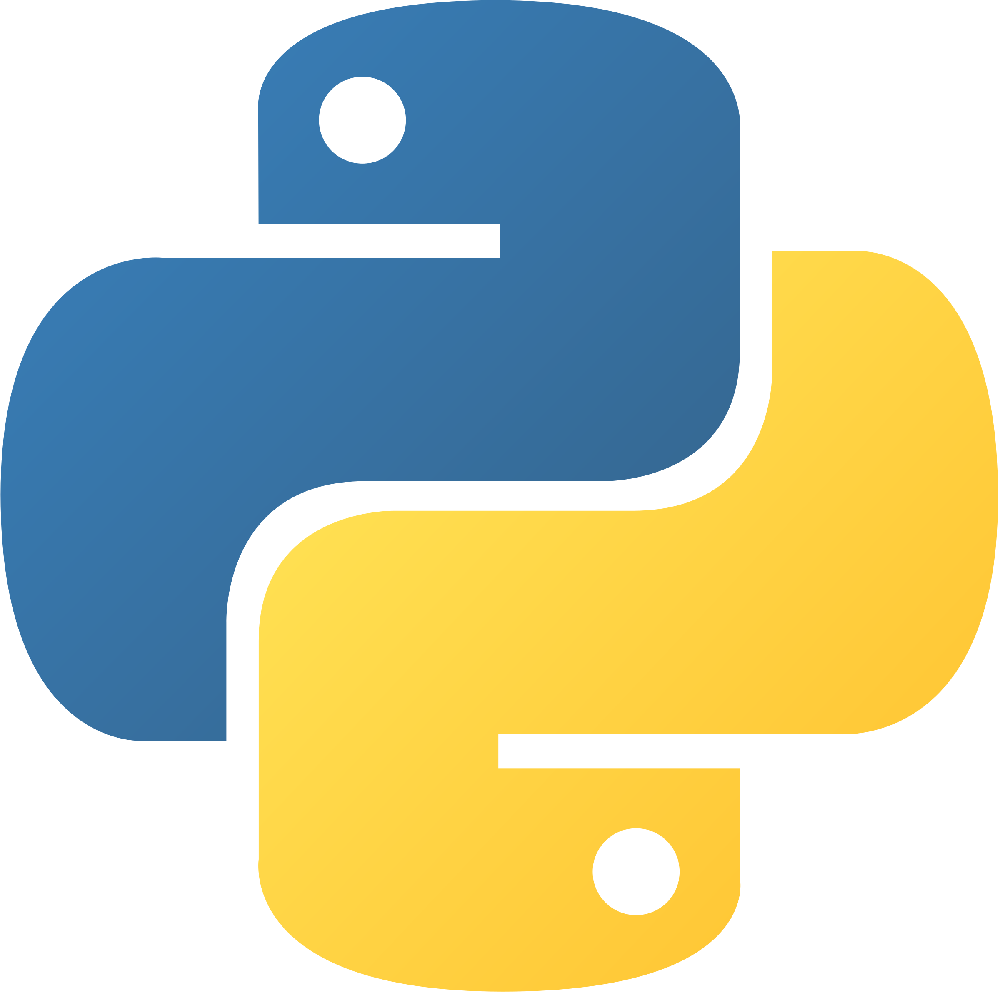

This is a project that demonstrates a three-tier distributed web application architecture using Java Servlets, JSP, and MySQL. The application simulates an enterprise system with role-based access control and database operations.
The application works as a multi-user database client where different types of users can interact with a MySQL database through a web interface. When a user logs in, the system authenticates them against a credentials database and routes them to their specific interface based on their role - whether they're a Root administrator, Client viewer, Data Entry clerk, or Accountant.
Each user type connects to the database with different MySQL accounts that have varying permission levels. Root users can execute any SQL command and see business logic in action, while Client users can only run SELECT queries. Data Entry users work through HTML forms to add suppliers, parts, jobs, and shipments, while Accountants have specialized interfaces for financial operations.
The most interesting feature is the automated business logic: when the Root user performs operations involving shipments with quantities of 100 or more, the system automatically detects this and increases the affected supplier's status by 5 points. This demonstrates how enterprise applications can have built-in business rules that execute automatically based on data changes.


 
